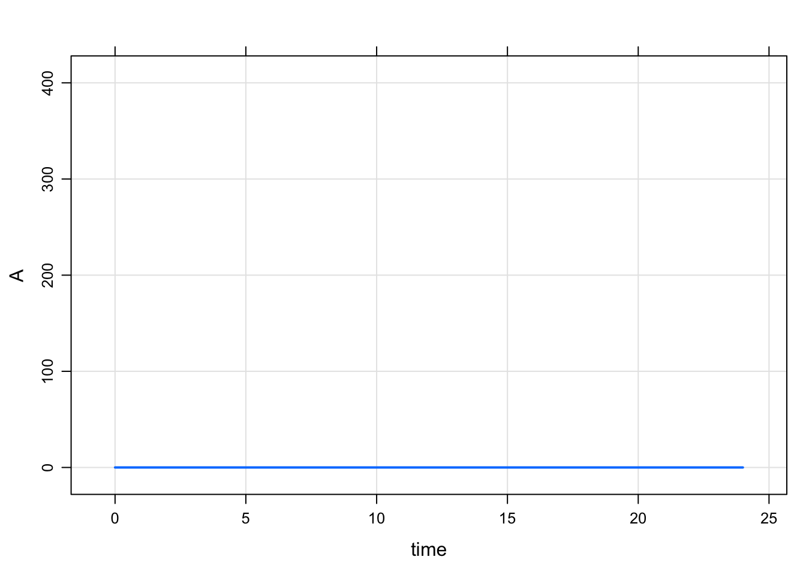
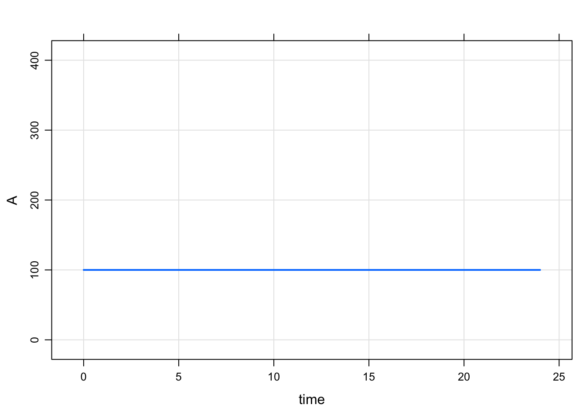
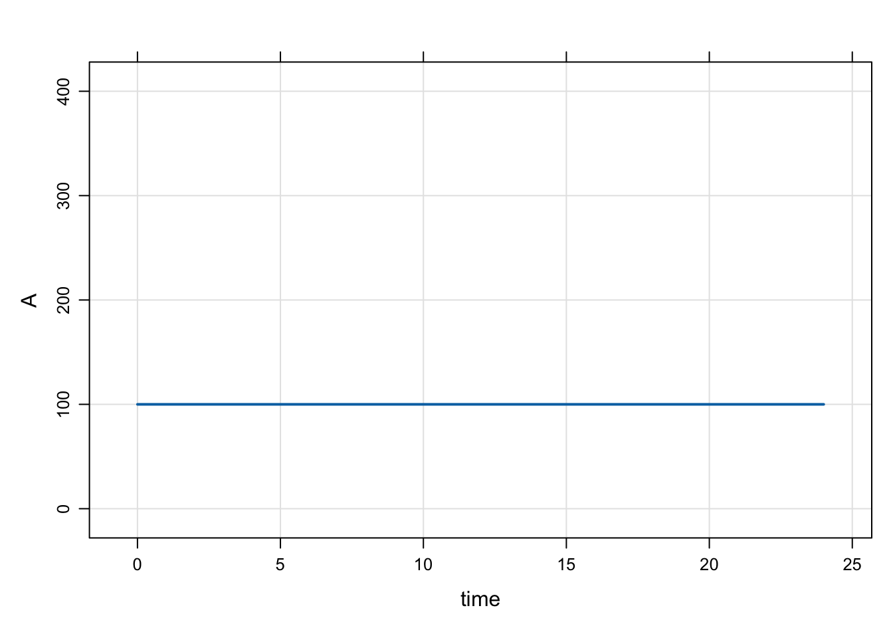
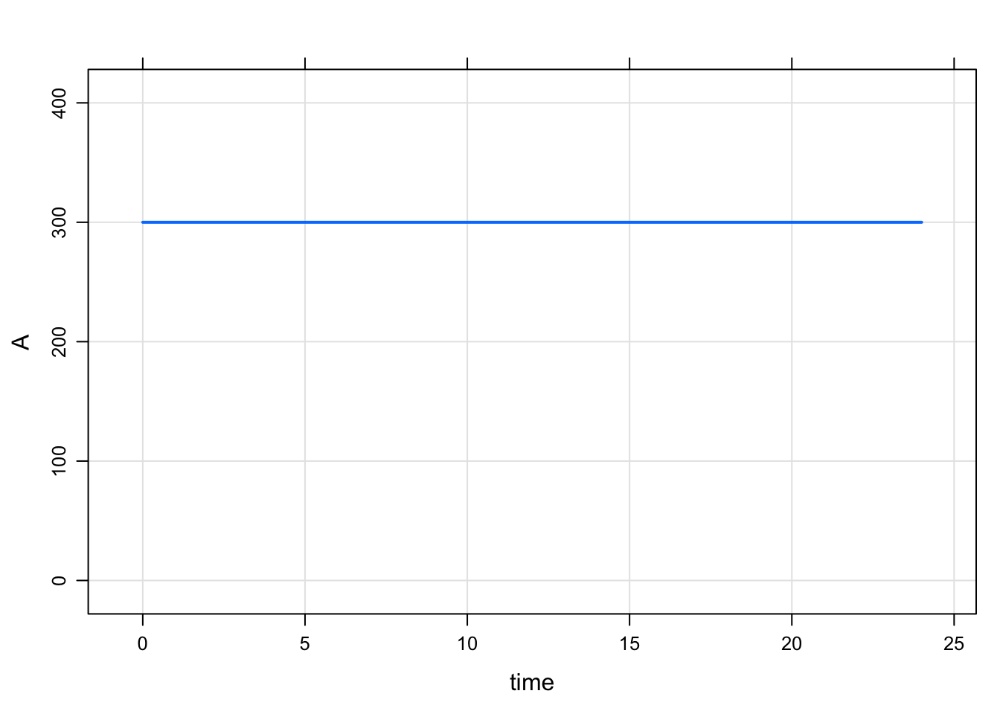

Set initial conditions
1 Short answer
There are two commonly-used ways to set initial conditions: in $MAIN and in the initial condition list.
1.1 Set initials in $MAIN
For a compartment called CMT, there is a variable available to you called CMT_0 that you can use to set the initial condition of that compartment in $MAIN. For example:
code <- '
$PARAM KIN = 200, KOUT = 50
$CMT RESP
$MAIN
RESP_0 = KIN/KOUT;
'This is the most commonly-used way to set initial conditions: the initial condition for the RESP compartment is set equal to KIN divided by KOUT. If you had a parameter called BASE, you could also write RESP_0 = BASE;. In these examples, we’re using data items from $PARAM. But the initial condition could be set to any numeric value in the model, including individual parameters derived from parameters, covariates, and random effects. Note that you should never declare RESP_0 (e.g. double RESP_0): it just appears for you to use.
1.2 Set initials in the init list
You can also set initial conditions in the initials list. Most commonly, this means declaring compartments with $INIT rather than $CMT. For example
code <- '
$INIT RESP = 4
'This method gets us the same result as the previous example, however the initial condition now is not a derived value, but it is coded as a number. Alternatively, you could declare a compartment via $CMT and update later (see next).
We can update this value later like this
mod <- mcode("init_up", code)
init(mod).
. Model initial conditions (N=1):
. name value . name value
. RESP (1) 4 | . ... .init(mod, RESP=8) %>% init.
. Model initial conditions (N=1):
. name value . name value
. RESP (1) 8 | . ... .This method is commonly used to set initial conditions in large QSP models where the compartment starts out as some known or assumed steady state value.
1.3 Don’t use initial conditions as a dosing mechanism
Using an initial condition to put a starting dose in a compartment is not recommended. Always use a dosing event for that.
2 Long answer
The following is from a wiki post I did on the topic. It’s pedantic. But hopefully helpful to learn what mrgsolve is doing for those who want to know.
mrgsolvekeeps a base list of compartments and initial conditions that you can update either fromRor from inside the model specification- When you use
$CMT, the value in that base list is assumed to be 0 for every compartment mrgsolvewill by default use the values in that base list when starting the problem- When only the base list is available, every individual will get the same initial condition
- When you use
- You can override this base list by including code in
$MAINto set the initial condition- Most often, you do this so that the initial is calculated as a function of a parameter
- For example,
$MAIN RESP_0 = KIN/KOUT;whenKINandKOUThave some value in$PARAM - This code in
$MAINoverwrites the value in the base list for the currentID
- For typical PK/PD type models, we most frequently initialize in
$MAIN- This is equivalent to what you might do in your NONMEM model
- For larger systems models, we often just set the initial value via the base list
2.1 Make a model only to examine init behavior
Note: IFLAG is my invention only for this demo. The demo is always responsible for setting and interpreting the value (it is not reserved in any way and mrgsolve does not control the value).
For this demo
- Compartment
Ainitial condition defaults to 0 - Compartment
Ainitial condition will get set toBASEonly ifIFLAG > 0 - Compartment
Aalways stays at the initial condition (the system doesn’t advance)
code <- '
$PARAM BASE=200, IFLAG = 0
$CMT A
$MAIN
if(IFLAG > 0) A_0 = BASE;
$ODE dxdt_A = 0;
'mod <- mcode("init_long",code)
dplot <- function(x) plot(x,ylim=c(0,400))Check the initial condition
init(mod).
. Model initial conditions (N=1):
. name value . name value
. A (1) 0 | . ... .Note:
- We used
$CMTin the model spec; that implies that the base initial condition forAis set to 0 - In this chunk, the code in
$MAINdoesn’t get run becauseIFLAGis 0 - So, if we don’t update something in
$MAINthe initial condition is as we set it in the base list
mod %>% mrgsim %>% dplot
Next, we update the base initial condition for A to 100
Note:
- The code in
$MAINstill doesn’t get run becauseIFLAGis 0
mod %>% init(A = 100) %>% mrgsim %>% dplot
Now, turn on IFLAG
Note:
- Now, that code in
$MAINgets run A_0is set to the value ofBASE
mod %>% param(IFLAG=1) %>% mrgsim %>% dplot
mod %>% param(IFLAG=1, BASE=300) %>% mrgsim %>% dplot
2.2 Example PK/PD model with initial condition
Just to be clear, there is no need to set any sort of flag to set the initial condition.
code <- '
$PARAM AUC=0, AUC50 = 75, KIN=200, KOUT=5
$CMT RESP
$MAIN
RESP_0 = KIN/KOUT;
$ODE
dxdt_RESP = KIN*(1-AUC/(AUC50+AUC)) - KOUT*RESP;
'mod <- mcode("init_long2", code)The initial condition is set to 40 per the values of KIN and KOUT
mod %>% mrgsim %>% plot
Even when we change RESP_0 in R, the calculation in $MAIN gets the final say
mod %>% init(RESP=1E9) %>% mrgsim. Model: init_long2
. Dim: 25 x 3
. Time: 0 to 24
. ID: 1
. ID time RESP
. [1,] 1 0 40
. [2,] 1 1 40
. [3,] 1 2 40
. [4,] 1 3 40
. [5,] 1 4 40
. [6,] 1 5 40
. [7,] 1 6 40
. [8,] 1 7 402.3 Calling init will let you check to see what is going on
- It’s a good idea to get in the habit of doing this when things aren’t clear
initfirst takes the base initial condition list, then calls$MAINand does any calculation you have in there; so the result is the calculated initials
init(mod).
. Model initial conditions (N=1):
. name value . name value
. RESP (1) 40 | . ... .mod %>% param(KIN=100) %>% init.
. Model initial conditions (N=1):
. name value . name value
. RESP (1) 20 | . ... .3 Set initial conditions via idata
Go back to house model
mod <- mrgsolve:::house()
init(mod).
. Model initial conditions (N=3):
. name value . name value
. CENT (2) 0 | RESP (3) 50
. GUT (1) 0 | . ... .Notes
- In
idata(only), include a column withCMT_0(like you’d do in$MAIN). - When each ID is simulated, the
idatavalue will override the base initial list for that subject.
- But note that if
CMT_0is set in$MAIN, that will override theidataupdate.
idata <- expand.idata(CENT_0 = seq(0,25,1))
idata %>% head. ID CENT_0
. 1 1 0
. 2 2 1
. 3 3 2
. 4 4 3
. 5 5 4
. 6 6 5out <-
mod %>%
idata_set(idata) %>%
mrgsim(end=40)plot(out, CENT~.)
mrgsolve: mrgsolve.github.io | Metrum Research Group: metrumrg.com